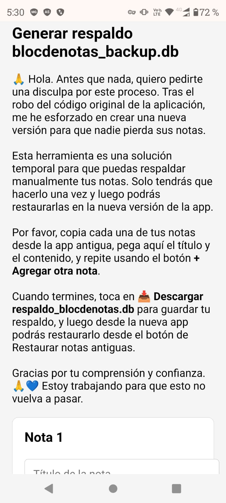
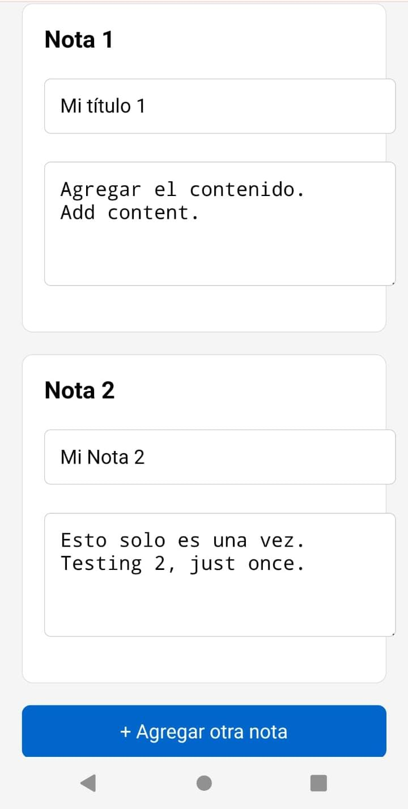
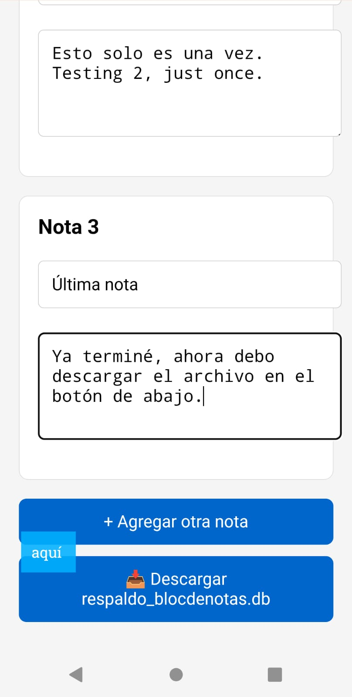
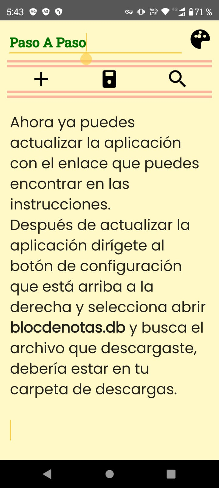
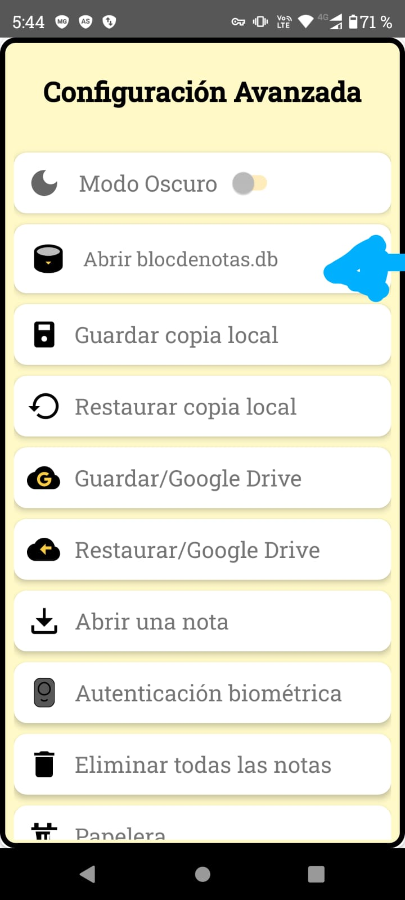
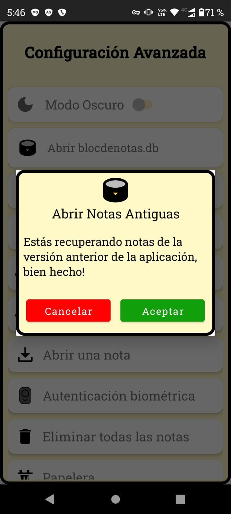

👉 Aquí te explico paso a paso cómo guardar tus notas antes de actualizar la app, para que no pierdas nada importante.
Entra a tu aplicación de notas actual y localiza todas las notas importantes que quieras conservar. Y debes pegar una por una en el formulario que he creado para la copia de seguridad, tu decides cuantas notas guardar.
Abre cada nota, selecciona el título y el contenido, cópialos y pegalos. Luego le das en Agregar nota
Haz clic en 📥 Descargar respaldo_blocdenotas.db y guarda el archivo en tu teléfono 📱.
Si ya guardaste todas tus notas ve a la versión nueva desde este enlace:
En la nueva app, selecciona la opción Abrir blocdenotas.db que encuentras en la configuración en el botón de arriba a la derecha es la segunda opción que encontrarás.
Después de aceptar elige el archivo que descargaste llamado respaldo_blocdenotas.db.
Al seleccionarlo ya debes tener todas tus notas restauradas en la versión nueva, felicidades lo logramos juntos!.
ahora desde la app nueva podrás disfrutar de cada una de las nuevas funciones y recuerda usar los métodos de copias de seguridad local y Google Drive, cualquier pregunta que tengas con gusto la responderé en el correo: jikansoftware@gmail.com Disculpa por todo, gracias y bendiciones.
